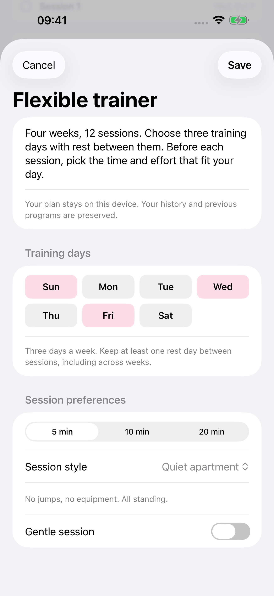

Por Nikita Revin, desenvolvedor do Tonus · 23 de outubro de 2026
Veja o que muda entre Casa tranquila, Tudo em pé e Só você antes de começar uma sessão curta no iPhone.
Se você quer fazer uma sessão sem deitar no chão, escolha Casa tranquila ou Tudo em pé. A opção Só você também dispensa equipamentos, mas inclui movimentos no chão. Os três nomes aparecem como alternativas: você seleciona um modo por sessão.
Abra uma sessão rápida na tela inicial
Toque em Um treino rápido sem plano. Escolha 5, 10 ou 20 minutos e depois toque no modo desejado. A marca de seleção mostra qual está ativo; o texto abaixo do nome explica o formato. Confira a escolha antes de tocar em Começar.

Escolha pelo espaço que você vai usar
| Modo | Movimentos da sessão | Uso do chão |
|---|---|---|
| Casa tranquila | Elevações de panturrilha, agachamentos com o peso do corpo e inclinações para a frente. | Todos em pé, sem saltos e sem equipamentos. |
| Tudo em pé | Caminhada, elevações de panturrilha, agachamentos e inclinações para a frente. | Sem exercícios no chão e sem tapete. |
| Só você | Caminhada, agachamento, flexão com os joelhos apoiados, ponte de glúteos, prancha e inclinação para a frente. | Inclui movimentos no chão. O app descreve o tapete como opcional. |
Casa tranquila e Tudo em pé têm movimentos em comum. A diferença mais fácil de reconhecer na sessão rápida é a caminhada, presente em Tudo em pé. O nome Casa tranquila descreve a seleção de exercícios; o ruído também depende do piso e de como você se movimenta.
Em Só você, confira se há espaço para os movimentos no chão antes de começar. Se quiser permanecer em pé durante toda a sessão, volte à escolha de modo. O fato de um treino dispensar halteres não significa que todos os exercícios sejam feitos em pé.
A duração inclui trabalho e descanso
Na sessão rápida regular, cada intervalo tem 35 segundos de movimento e 15 de descanso. Seis intervalos formam um bloco de cinco minutos. As opções de dez e vinte minutos repetem o bloco duas e quatro vezes.
Quando o modo suave está ativo, a divisão passa a 25 segundos de movimento e 25 de descanso, mantendo o tempo do bloco. A opção de sessão suave no início rápido aparece após a avaliação mais alta de dificuldade do treino anterior. No plano flexível, o esforço também pode ser escolhido antes de começar a sessão.
Esse tempo corresponde aos intervalos programados. Pausas, leitura das instruções e abertura de vídeos podem aumentar o tempo que você passa no aplicativo. Escolha a duração deixando espaço para conferir os movimentos.
O plano flexível também tem uma escolha de estilo
Ao criar ou editar o Treinador flexível, procure as preferências da sessão e escolha o estilo. A tela reúne duração, formato e esforço. O plano alterna sequências ao longo das 12 sessões, por isso a lista de movimentos de uma sessão rápida não descreve todos os treinos do plano.

Para entender como o calendário trata uma falta, consulte o guia do plano de 12 treinos. Para comparar uma sessão avulsa com o plano, veja como escolher 5, 10 ou 20 minutos.
Confira o exercício antes de seguir
Leia as instruções do movimento e use a troca de exercício quando houver uma alternativa disponível. Em Casa tranquila e Tudo em pé, as alternativas das sessões domésticas ficam limitadas aos movimentos do modo escolhido. O app não determina se um exercício é adequado para uma lesão ou condição de saúde.
Planos e instruções escritas funcionam offline. Vídeos online precisam de conexão, e serviços externos podem mostrar anúncios. O guia de uso offline explica como preparar os clipes compatíveis antes de ficar sem rede.
O Tonus é gratuito, sem cadastro, assinatura ou compras no app, e requer iOS 17 ou posterior. Apple Saúde é opcional. Pare se sentir dor ou mal-estar; se houver restrições de saúde, converse com um profissional qualificado.